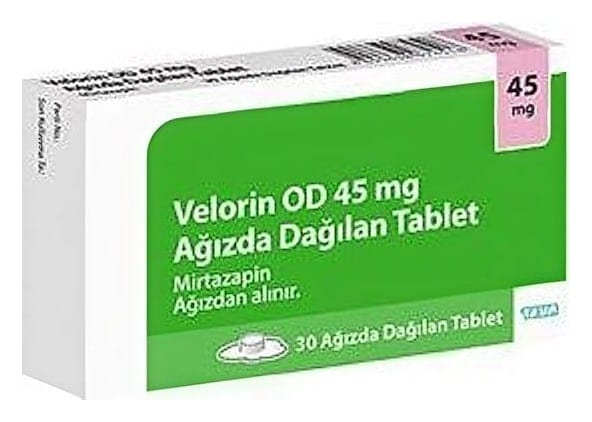

Velorin OD 45 mg Ağızda Dağılan Tablet, 30 Adet

Ne için kullanılır
KT · Bölüm 1VELORİN OD, antidepresanlar adıyla bilinen bir ilaç grubuna üyedir.
Etkin madde mirtazapindir.
VELORİN OD, yuvarlak ve beyaz ile beyaza yakın renkte tablettir. Tabletin bir yüzünde kod numarası (M4) yazılıdır.
Mevcut ambalaj; 30 tablet
VELORİN OD yetişkinlerde depresif bozukluğun tedavisinde kullanılır.
VELORİN OD’nin etkisini göstermesi 1 ila 2 haftayı alacaktır. 2 ila 4 hafta sonra kendinizi daha iyi hissetmeye başlayabilirsiniz. Eğer 2 ila 4 hafta sonra hala iyi hissetmiyorsanız ya da daha kötü hissediyorsanız doktorunuza danışmalısınız. Daha fazla bilgi için "3. VELORİN OD nasıl kullanılır?" bölümüne bakınız.